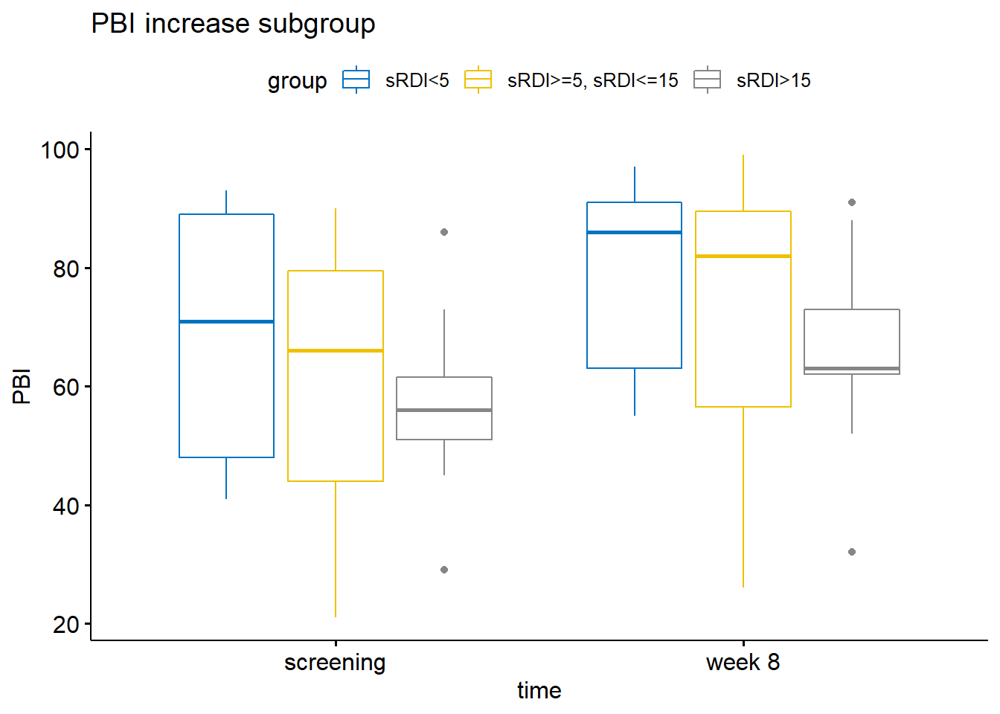
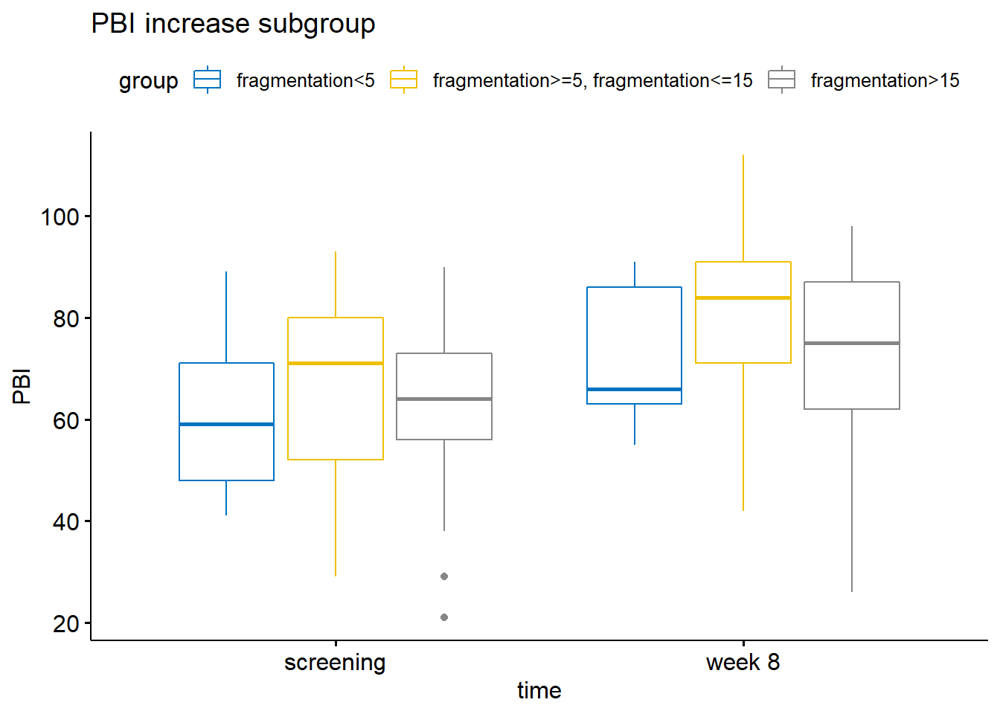
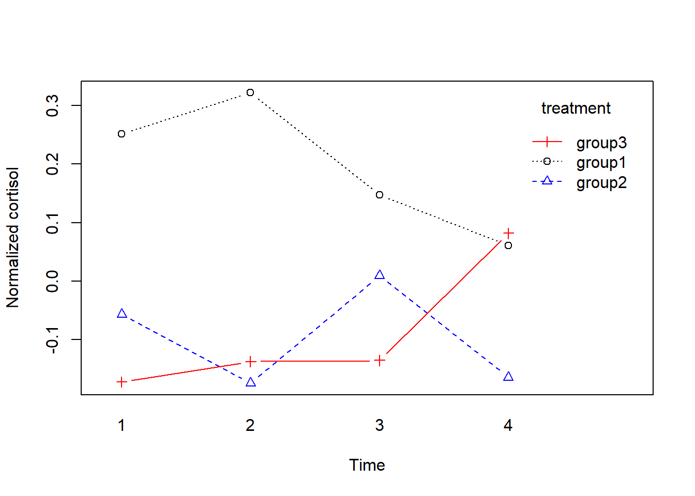
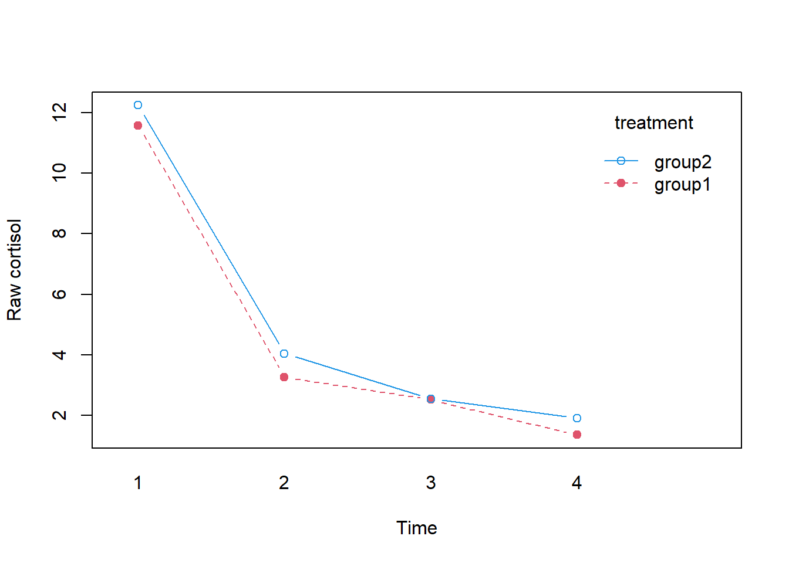

3/29/2022
Last updated: 2022-05-12
Checks: 6 1
Knit directory: Collaborations/
This reproducible R Markdown analysis was created with workflowr (version 1.7.0). The Checks tab describes the reproducibility checks that were applied when the results were created. The Past versions tab lists the development history.
The R Markdown file has unstaged changes. To know which version of the R Markdown file created these results, you’ll want to first commit it to the Git repo. If you’re still working on the analysis, you can ignore this warning. When you’re finished, you can run wflow_publish to commit the R Markdown file and build the HTML.
Great job! The global environment was empty. Objects defined in the global environment can affect the analysis in your R Markdown file in unknown ways. For reproduciblity it’s best to always run the code in an empty environment.
The command set.seed(20210523) was run prior to running the code in the R Markdown file. Setting a seed ensures that any results that rely on randomness, e.g. subsampling or permutations, are reproducible.
Great job! Recording the operating system, R version, and package versions is critical for reproducibility.
Nice! There were no cached chunks for this analysis, so you can be confident that you successfully produced the results during this run.
Great job! Using relative paths to the files within your workflowr project makes it easier to run your code on other machines.
Great! You are using Git for version control. Tracking code development and connecting the code version to the results is critical for reproducibility.
The results in this page were generated with repository version 6986649. See the Past versions tab to see a history of the changes made to the R Markdown and HTML files.
Note that you need to be careful to ensure that all relevant files for the analysis have been committed to Git prior to generating the results (you can use wflow_publish or wflow_git_commit). workflowr only checks the R Markdown file, but you know if there are other scripts or data files that it depends on. Below is the status of the Git repository when the results were generated:
Ignored files:
Ignored: analysis/.Rhistory
Unstaged changes:
Modified: analysis/2022_Mar3_kate.Rmd
Note that any generated files, e.g. HTML, png, CSS, etc., are not included in this status report because it is ok for generated content to have uncommitted changes.
These are the previous versions of the repository in which changes were made to the R Markdown (analysis/2022_Mar3_kate.Rmd) and HTML (docs/2022_Mar3_kate.html) files. If you’ve configured a remote Git repository (see ?wflow_git_remote), click on the hyperlinks in the table below to view the files as they were in that past version.
| File | Version | Author | Date | Message |
|---|---|---|---|---|
| Rmd | f3c6de7 | Han | 2022-05-12 | 5/12/2022 |
| html | f3c6de7 | Han | 2022-05-12 | 5/12/2022 |
PBI (papillary bleeding index)
trajectory plot
- measurements are taken at 2 time points,
PBI.Screening,PBI.8.wk, and are longitudinal data

summary statistics
# A tibble: 2 x 5
time variable n mean sd
<chr> <chr> <dbl> <dbl> <dbl>
1 screening PBI 102 70.0 19.5
2 week 8 PBI 102 66.4 20.6boxplot
outlier detection
[1] time PBI individual is.outlier is.extreme
<0 rows> (or 0-length row.names)normality assumption
# A tibble: 2 x 4
time variable statistic p
<chr> <chr> <dbl> <dbl>
1 screening PBI 0.990 0.671
2 week 8 PBI 0.981 0.143- all p values are bigger than 0.05, suggesting they are normally distributed.
- most points fall along reference line, normality assumption is reasonable.
ANOVA Table (type III tests)
Effect DFn DFd F p p<.05 ges
1 time 1 101 4.737 0.032 * 0.008anova_test repeated measures ANOVA
PBI: dependent variable
PIB are statistical different between screening and week 8 by small p value of 0.032.
Cluster PBI by change direction

# A tibble: 2 x 5
time variable n mean sd
<chr> <chr> <dbl> <dbl> <dbl>
1 screening PBI 43 63.3 18.1
2 week 8 PBI 43 74.6 19.1ANOVA Table (type III tests)
Effect DFn DFd F p p<.05 ges
1 time 1 42 72.314 1.12e-10 * 0.087
# A tibble: 2 x 5
time variable n mean sd
<chr> <chr> <dbl> <dbl> <dbl>
1 screening PBI 58 74.8 19.3
2 week 8 PBI 58 60.2 19.8ANOVA Table (type III tests)
Effect DFn DFd F p p<.05 ges
1 time 1 57 95.479 8.72e-14 * 0.125SAI (sleep apnea index) & PBI - two way repeated anova
Each individual has one single SAI for both before and after the screening.
# A tibble: 6 x 6
time group variable n mean sd
<chr> <chr> <chr> <dbl> <dbl> <dbl>
1 screening SAI<5 PBI 33 74.1 21.1
2 week 8 SAI<5 PBI 33 71.4 19.0
3 screening SAI>=5, SAI<=15 PBI 32 68.2 21.4
4 week 8 SAI>=5, SAI<=15 PBI 32 64.9 23.3
5 screening SAI>15 PBI 37 67.8 15.8
6 week 8 SAI>15 PBI 37 63.3 19.1ANOVA Table (type II tests)
Effect DFn DFd F p p<.05 ges
1 group 2 198 2.581 0.078 0.0250
2 time 1 198 1.602 0.207 0.0080
3 group:time 2 198 0.040 0.961 0.0004# A tibble: 6 x 6
time group variable n mean sd
<chr> <chr> <chr> <dbl> <dbl> <dbl>
1 screening SAI<5 PBI 15 64.1 19.5
2 week 8 SAI<5 PBI 15 75 18.1
3 screening SAI>=5, SAI<=15 PBI 12 60.9 19.2
4 week 8 SAI>=5, SAI<=15 PBI 12 74.7 23.6
5 screening SAI>15 PBI 16 64.4 16.9
6 week 8 SAI>15 PBI 16 74.2 17.5ANOVA Table (type II tests)
Effect DFn DFd F p p<.05 ges
1 group 2 80 0.064 0.938 0.002
2 time 1 80 7.615 0.007 * 0.087
3 group:time 2 80 0.074 0.929 0.002# A tibble: 6 x 6
time group variable n mean sd
<chr> <chr> <chr> <dbl> <dbl> <dbl>
1 screening SAI<5 PBI 17 82.8 19.6
2 week 8 SAI<5 PBI 17 68 20.3
3 screening SAI>=5, SAI<=15 PBI 20 72.6 21.8
4 week 8 SAI>=5, SAI<=15 PBI 20 59.0 21.7
5 screening SAI>15 PBI 21 70.4 14.7
6 week 8 SAI>15 PBI 21 54.9 16.0ANOVA Table (type II tests)
Effect DFn DFd F p p<.05 ges
1 group 2 110 4.393 1.50e-02 * 0.074000
2 time 1 110 16.956 7.43e-05 * 0.134000
3 group:time 2 110 0.025 9.75e-01 0.000454 Df Sum Sq Mean Sq F value Pr(>F)
group 2 824 411.8 1.091 0.34
Residuals 99 37388 377.7 - no PBI difference among 3 groups at screening
Df Sum Sq Mean Sq F value Pr(>F)
group 2 1267 633.4 1.508 0.226
Residuals 99 41592 420.1 - no difference among 3 groups at week 8
# A tibble: 1 x 10
.y. group1 group2 n1 n2 statistic df p p.adj p.adj.signif
* <chr> <chr> <chr> <int> <int> <dbl> <dbl> <dbl> <dbl> <chr>
1 PBI screening week 8 102 102 2.18 101 0.032 0.032 * - there is difference between screening and week 8.
sRDI & PBI
# A tibble: 6 x 6
time group variable n mean sd
<chr> <chr> <chr> <dbl> <dbl> <dbl>
1 screening sRDI<5 PBI 12 69 19.6
2 week 8 sRDI<5 PBI 12 63.7 24.1
3 screening sRDI>=5, sRDI<=15 PBI 30 68.8 20.7
4 week 8 sRDI>=5, sRDI<=15 PBI 30 63.7 19.9
5 screening sRDI>15 PBI 29 68.4 17.8
6 week 8 sRDI>15 PBI 29 62.6 17.0ANOVA Table (type II tests)
Effect DFn DFd F p p<.05 ges
1 group 2 136 0.030 0.970 4.43e-04
2 time 1 136 2.788 0.097 2.00e-02
3 group:time 2 136 0.006 0.994 8.52e-05# A tibble: 6 x 6
time group variable n mean sd
<chr> <chr> <chr> <dbl> <dbl> <dbl>
1 screening sRDI<5 PBI 5 68.4 23.5
2 week 8 sRDI<5 PBI 5 78.4 18.4
3 screening sRDI>=5, sRDI<=15 PBI 11 61.3 22.6
4 week 8 sRDI>=5, sRDI<=15 PBI 11 72.3 24.6
5 screening sRDI>15 PBI 11 57 14.8
6 week 8 sRDI>15 PBI 11 65.9 16.2
ANOVA Table (type II tests)
Effect DFn DFd F p p<.05 ges
1 group 2 48 1.248 0.296 0.049000
2 time 1 48 3.299 0.076 0.064000
3 group:time 2 48 0.015 0.985 0.000616# A tibble: 6 x 6
time group variable n mean sd
<chr> <chr> <chr> <dbl> <dbl> <dbl>
1 screening sRDI<5 PBI 7 69.4 18.3
2 week 8 sRDI<5 PBI 7 53.1 23.1
3 screening sRDI>=5, sRDI<=15 PBI 18 73.1 19.3
4 week 8 sRDI>=5, sRDI<=15 PBI 18 57.8 15.1
5 screening sRDI>15 PBI 18 75.4 15.9
6 week 8 sRDI>15 PBI 18 60.5 17.7ANOVA Table (type II tests)
Effect DFn DFd F p p<.05 ges
1 group 2 80 0.729 0.486000 0.018000
2 time 1 80 16.018 0.000139 * 0.167000
3 group:time 2 80 0.008 0.992000 0.000197SQI (sleep quality index) vs PBI
Each individual has one SQI for both before and after the screening.
# A tibble: 4 x 6
time group variable n mean sd
<chr> <chr> <chr> <dbl> <dbl> <dbl>
1 screening SQI<=55 PBI 59 68.7 19.2
2 week 8 SQI<=55 PBI 59 63 19.6
3 screening SQI>55 PBI 43 71.7 19.9
4 week 8 SQI>55 PBI 43 71.1 21.3ANOVA Table (type II tests)
Effect DFn DFd F p p<.05 ges
1 group 1 200 3.882 0.050 0.019
2 time 1 200 1.613 0.206 0.008
3 group:time 1 200 0.821 0.366 0.004- big p values (>0.05) indicate no main or interaction effects
# A tibble: 4 x 6
time group variable n mean sd
<chr> <chr> <chr> <dbl> <dbl> <dbl>
1 screening SQI<=55 PBI 23 61.6 17.8
2 week 8 SQI<=55 PBI 23 70.8 19.4
3 screening SQI>55 PBI 20 65.2 18.7
4 week 8 SQI>55 PBI 20 79.0 18.2ANOVA Table (type II tests)
Effect DFn DFd F p p<.05 ges
1 group 1 82 2.206 0.141 0.026
2 time 1 82 8.019 0.006 * 0.089
3 group:time 1 82 0.333 0.566 0.004# A tibble: 4 x 6
time group variable n mean sd
<chr> <chr> <chr> <dbl> <dbl> <dbl>
1 screening SQI<=55 PBI 35 73.1 19.1
2 week 8 SQI<=55 PBI 35 57.5 18.3
3 screening SQI>55 PBI 23 77.3 19.6
4 week 8 SQI>55 PBI 23 64.2 21.6
ANOVA Table (type II tests)
Effect DFn DFd F p p<.05 ges
1 group 1 112 2.154 1.45e-01 0.019
2 time 1 112 16.304 9.91e-05 * 0.127
3 group:time 1 112 0.118 7.32e-01 0.001 Df Sum Sq Mean Sq F value Pr(>F)
group 1 224 224.3 0.59 0.444
Residuals 100 37988 379.9 - no PBI difference among 2 groups at screening
Df Sum Sq Mean Sq F value Pr(>F)
group 1 1638 1638.5 3.975 0.0489 *
Residuals 100 41220 412.2
---
Signif. codes: 0 '***' 0.001 '**' 0.01 '*' 0.05 '.' 0.1 ' ' 1- there is difference between two groups at week 8
Fragmentation vs PBI
# A tibble: 6 x 6
time group variable n mean sd
<chr> <chr> <chr> <dbl> <dbl> <dbl>
1 screening fragmentation<5 PBI 12 75.1 21.0
2 week 8 fragmentation<5 PBI 12 72.4 17.0
3 screening fragmentation>=5, fragmentation<=15 PBI 36 70.9 18.5
4 week 8 fragmentation>=5, fragmentation<=15 PBI 36 69.8 21.4
5 screening fragmentation>15 PBI 54 68.2 19.8
6 week 8 fragmentation>15 PBI 54 62.8 20.5
ANOVA Table (type II tests)
Effect DFn DFd F p p<.05 ges
1 group 2 198 2.303 0.103 0.023
2 time 1 198 1.601 0.207 0.008
3 group:time 2 198 0.261 0.771 0.003- big p values (>0.05) indicate no main or interaction effects
# A tibble: 6 x 6
time group variable n mean sd
<chr> <chr> <chr> <dbl> <dbl> <dbl>
1 screening fragmentation<5 PBI 5 61.6 19.1
2 week 8 fragmentation<5 PBI 5 72.2 15.5
3 screening fragmentation>=5, fragmentation<=15 PBI 17 66.6 18.7
4 week 8 fragmentation>=5, fragmentation<=15 PBI 17 80.1 18.3
5 screening fragmentation>15 PBI 21 61.0 17.9
6 week 8 fragmentation>15 PBI 21 70.8 20.2
ANOVA Table (type II tests)
Effect DFn DFd F p p<.05 ges
1 group 2 80 1.541 0.221 0.037
2 time 1 80 7.899 0.006 * 0.090
3 group:time 2 80 0.095 0.910 0.002# A tibble: 6 x 6
time group variable n mean sd
<chr> <chr> <chr> <dbl> <dbl> <dbl>
1 screening fragmentation<5 PBI 7 84.7 17.5
2 week 8 fragmentation<5 PBI 7 72.6 19.2
3 screening fragmentation>=5, fragmentation<=15 PBI 19 74.7 18.0
4 week 8 fragmentation>=5, fragmentation<=15 PBI 19 60.6 20.0
5 screening fragmentation>15 PBI 32 72.7 20.2
6 week 8 fragmentation>15 PBI 32 57.2 19.3
ANOVA Table (type II tests)
Effect DFn DFd F p p<.05 ges
1 group 2 110 2.879 6.00e-02 0.050000
2 time 1 110 16.531 9.02e-05 * 0.131000
3 group:time 2 110 0.049 9.52e-01 0.000894 Df Sum Sq Mean Sq F value Pr(>F)
group 2 507 253.6 0.666 0.516
Residuals 99 37705 380.9 - no PBI difference among groups at screening
Df Sum Sq Mean Sq F value Pr(>F)
group 2 1539 769.4 1.843 0.164
Residuals 99 41320 417.4 - no difference among groups at week 8.
BMI vs PBI
summary statistics
# A tibble: 10 x 6
time group variable n mean sd
<chr> <chr> <chr> <dbl> <dbl> <dbl>
1 screening (1):BMI<18.5 PBI 1 71 NA
2 week 8 (1):BMI<18.5 PBI 1 55 NA
3 screening (2):18.5<=BMI<24.9 PBI 44 68.4 19.1
4 week 8 (2):18.5<=BMI<24.9 PBI 44 63 19.8
5 screening (3):24.9<=BMI<29.9 PBI 36 68.1 21.6
6 week 8 (3):24.9<=BMI<29.9 PBI 36 64.7 20.7
7 screening (4)29.9<=BMI<34.9 PBI 14 77.2 17.4
8 week 8 (4)29.9<=BMI<34.9 PBI 14 77.7 16.2
9 screening (5):BMI>=34.9 PBI 7 74.7 13.8
10 week 8 (5):BMI>=34.9 PBI 7 76 26.7
outliers
# A tibble: 1 x 6
time group PBI individual is.outlier is.extreme
<chr> <chr> <int> <int> <lgl> <lgl>
1 screening (4)29.9<=BMI<34.9 45 73 TRUE FALSE one outlier
normality assumption

results
ANOVA Table (type II tests)
Effect DFn DFd F p p<.05 ges
1 group 4 194 2.504 0.044 * 0.049
2 time 1 194 1.615 0.205 0.008
3 group:time 4 194 0.221 0.926 0.005- big p values (>0.05) indicate no main or interaction effects
Df Sum Sq Mean Sq F value Pr(>F)
group 4 1129 282.2 0.738 0.568
Residuals 97 37083 382.3 - no PBI difference among groups at screening
Df Sum Sq Mean Sq F value Pr(>F)
group 4 3184 796 1.946 0.109
Residuals 97 39675 409 - no difference
statistical software
_
platform x86_64-w64-mingw32
arch x86_64
os mingw32
system x86_64, mingw32
status
major 4
minor 1.2
year 2021
month 11
day 01
svn rev 81115
language R
version.string R version 4.1.2 (2021-11-01)
nickname Bird Hippie
sessionInfo()R version 4.1.2 (2021-11-01)
Platform: x86_64-w64-mingw32/x64 (64-bit)
Running under: Windows 10 x64 (build 18363)
Matrix products: default
locale:
[1] LC_COLLATE=English_United States.1252
[2] LC_CTYPE=English_United States.1252
[3] LC_MONETARY=English_United States.1252
[4] LC_NUMERIC=C
[5] LC_TIME=English_United States.1252
attached base packages:
[1] stats graphics grDevices utils datasets methods base
other attached packages:
[1] rstatix_0.7.0 ggpubr_0.4.0 forcats_0.5.1 stringr_1.4.0
[5] dplyr_1.0.7 purrr_0.3.4 readr_2.1.1 tidyr_1.1.4
[9] tibble_3.1.6 ggplot2_3.3.5 tidyverse_1.3.1
loaded via a namespace (and not attached):
[1] Rcpp_1.0.8 lubridate_1.8.0 assertthat_0.2.1 rprojroot_2.0.2
[5] digest_0.6.29 utf8_1.2.2 R6_2.5.1 cellranger_1.1.0
[9] backports_1.4.1 reprex_2.0.1 evaluate_0.14 highr_0.9
[13] httr_1.4.2 pillar_1.6.5 rlang_0.4.12 readxl_1.3.1
[17] rstudioapi_0.13 car_3.0-12 whisker_0.4 jquerylib_0.1.4
[21] rmarkdown_2.11 labeling_0.4.2 munsell_0.5.0 broom_0.7.11
[25] compiler_4.1.2 httpuv_1.6.5 modelr_0.1.8 xfun_0.29
[29] pkgconfig_2.0.3 htmltools_0.5.2 tidyselect_1.1.1 workflowr_1.7.0
[33] fansi_1.0.2 crayon_1.4.2 tzdb_0.2.0 dbplyr_2.1.1
[37] withr_2.4.3 later_1.3.0 grid_4.1.2 jsonlite_1.7.3
[41] gtable_0.3.0 lifecycle_1.0.1 DBI_1.1.2 git2r_0.29.0
[45] magrittr_2.0.1 scales_1.1.1 carData_3.0-5 cli_3.1.1
[49] stringi_1.7.6 farver_2.1.0 ggsignif_0.6.3 fs_1.5.2
[53] promises_1.2.0.1 xml2_1.3.3 bslib_0.3.1 ellipsis_0.3.2
[57] generics_0.1.1 vctrs_0.3.8 cowplot_1.1.1 ggsci_2.9
[61] tools_4.1.2 glue_1.6.0 hms_1.1.1 abind_1.4-5
[65] fastmap_1.1.0 yaml_2.2.2 colorspace_2.0-2 rvest_1.0.2
[69] knitr_1.37 haven_2.4.3 sass_0.4.1